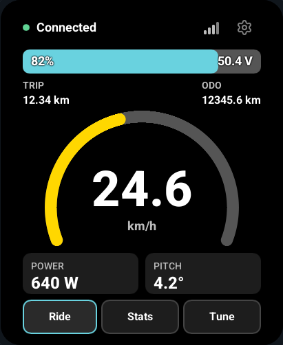

Wheelie Fun
Display
Setup and operating instructions for the Wheelie Fun Display, with connection guides for Wheelie Fun Bike, wheel-e and VESC.

Set up your display
Follow the first-installation steps, choose your bike type and make your first connection.
Get started →02Use the display
Learn Ride, Stats and Tune, change display settings and use the touchscreen.
Read the user guide →03Choose your connection
Connect over Bluetooth, set up a wired connection or use a phone app through the display.
Connect a bike →Portrait and landscape
Choose portrait or landscape in Settings to match your mount. The screen and touch controls rotate together.
Read the display controls →
Supported displays
Waveshare ESP32-S3 AMOLED 2.06 pairs a 410 × 502 CO5300 panel with FT3168 touch. GUITION JC4880P443C uses a 480 × 800 ST7701S panel, GT911 touch and ESP32-P4 with a C6 radio companion. Choose your exact model when installing, then follow its board guide for wiring and setup. The GUITION profile requires a P4 below revision 3.0 and compatible C6 radio firmware.